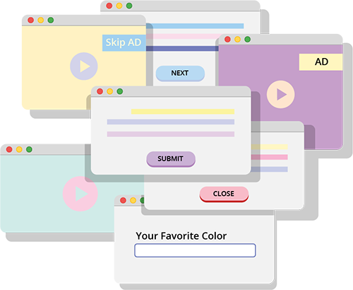

Entry 05
While reading the article "Game Design Principals", I came to the realization that some game ideas can be overcomplicated. Although it is fun to have a variety of features, over simplicity can create a better focus on the game and increase the enjoyability. While noticing there is a strong and clear core mechanics, I also noted that its beneficial to focus on polishing one solid idea.
One of the topics that resonated with me was the discussion of meangingful feedback and balanced difficulty. I often play mobile games and when it comes to in-game rewards, it can become meaningless if not used properly. The article helped me understand that having a balance of difficulty and feedback helpes players feel more motivated within the game. It also helped me recgonize m own gaming habits and areas where of I focus too much on reward rather than the object of the game.
The importance of playtesting felt like a wake-up call as a design major. As designers, we stand on the core-value of testing. It is quiet easy to miss that core value, especially in web-deisgn spaces. I tend to avoid testing since I feel embarassed and/or ashamed of my design. THis article reminded me that feedback is a treasure. Feedback can we used as a guide rather than a step-back.
Entry 04
For peer critique, Rachel and I reviwed eachothers images and gave eachother feedback. Rachel for this assignment decided to photograph her hyperfixations and showcase her collections throughout the years. This included her kpop collection, pokemon cards, books/manga, plushies, and chochet projects. The ost interesting aspect of the images is the items she decided to consider collections. Somethings like books/manga and albums are more of of a stereotypical collections. However, chocheting and baking are more past hobbies, so it interesting how she decided to add those into her theme. The mysterious aspects of her images is the size of her collections, Some of them seem smaller than other vise-versa. So I am excited to see how she decides to display her different collections. Some suggestions I can make is to start thinking about the changes that are gonna be made and what indivdual items will be shown from each collection.
 Rachel Yang 2025
Rachel Yang 2025
For one of the images I chose, an image I took while visting the tallest bridge in the state. I visited it with some friends after she ran a 5K. What makes this image so special is the moment I took it. The trip itself to the bridge reminded me of home, specifically my dad. My dad is so knowlegable of many random historic sights in California. So when taking the picture I kept thinking about how much my parents would enjoy to be here. It fits my theme of "damn, i wish my parents were here" because it showcases the guilt I can feel while be a first-gen daughter, experiencing things my parents never had the chance to do. I could update my images by making them black or white in certain aspects, highlighting certain parts to make it more dramatic.
 Leslie Navarro 2025
Leslie Navarro 2025
Entry 03
The article "10 Intriguing Photographs to Teach Close Reading and Visual Thinking Skills" focuses on using images as a method for close reading. THe article encourages students to ask questions while observing details and making educated inferences, Visual thinking is an active process and the idea that images combined with discussion can be used for critical thinking.
Awwwards showcases websites that utilize visual designs and interactive methods to create a unique experiences. Sites like these often demand user to explore, egage and interact with different features aprat from scrolling. Some great exmaples of this includes immersive visual storytelling and/or designs that inspire curiosity. Strengths of this includes being able to communicate in new ways and can showcase how interaction can promote exploration. Some drawbacks include prioritizing style over clarity, often making the user experience confusing. It also requires heavy visuals which can cause preformance issues depending on the device.
I often think about websites as platforms for communication and as a platform for information. I find in interesting thinking about websites in a different way, encouraging visual storytelling. I think these types of websites are visually enganging however, the advantage they have is that it can be accessed by anyone with a working phone and/or desktop. However, I do think the accessibility and preformance side of creating these types of websites often scares me.
Original Article

Entry 02
When reading "Best Practices for Modals/Overlays/Dialog", author Naema Baskanderi focused on the diagram model and how it's useful to enhance the user experience. Modals are relevant because they are commonly used in modern interfaces and easily can become difficuly is not thought out properly.
When using modals, they should be with intention and when the users full attention is needed. The purpose of the modal should be clear and increase accessibility, meaning it's also simple and focused on content. There shoild also be visible exit objects in order to avoid trapping the user. Modals are made in make the user experience smoother and easier, therefore modals should not block essetial navigation. They should instead be responsive and accessible.
While reading this article, I was able to gain a better understanding around the idea of modals as a design element and not just a user flow decision. Fo future projects, I hope to be more intuitive when using modals and focus on havining minimal popups and interruptions. I can see how this aligns with UX principals of maintaining the user's control and keeping an emphasis of accessibility.

Entry 01
After reading “Best Practices for Form Design,”, I was amazed bu how much planning goes into creating forms for users. Something thta can be seen as so simple can tae so mucn thought and planning. There is a great emphasis on clarity, as well design forms guides users through the process smootly. When forms are poorly designed, it can lead to fraustration from the user, leading to abandoment. Explnations on the importance of grouped related feilds were extremly useful.
Something that stood out to me was how the smallest detais can impact usability. Things like labels, placement and feedback can make or break a form. I have often filled out forms that were over whelming, therefore these tips help me realize the areas these forms can be improved.
Using these principles, I can apply them to upcoming and future projects. I can use these principals by increasing my atention to detail and be intentional with my language, flow and visuals. Successful design is not always aboyt visuals and appercance, but also focus on the users journey.
Original Article